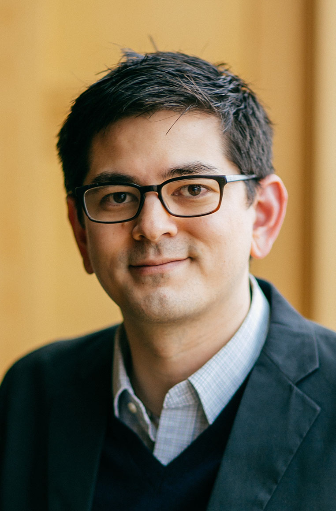
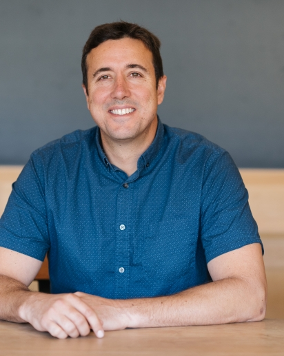

---
redirect_from:
  - "/features/markdown/instructors"
title: |-
  Instructors
pagenum: 2
prev_page:
  url: /features/markdown/Contributing.html
next_page:
  url: /features/markdown/Syllabus.html
suffix: .md
search: dartmouth college neuroscience university social research instructors professor phd img src images width completed cognitive jpg com computational io github lab chang affective ba psychology wager spring school focused methods org data community bryan graduate student learning course luke assistant psychological brain sciences laboratory ma clinical training behavioral medicine california fellowship colorado boulder tor program understanding mechanisms dartbrains analysis mtnhuck received associate columbia edu canlab also tools scientific huckins jeremy fall researcher worked king harvard mental gonzalez nyu studying before ziman currently brietzke www socialneurolab professors lukejchang directs cosanlab reed new arizona alan sanfey predoctoral internship los angeles postdoctoral under

comment: "***PROGRAMMATICALLY GENERATED, DO NOT EDIT. SEE ORIGINAL FILES IN /content***"
---

    <main class="jupyter-page">
    <div id="page-info"><div id="page-title">Instructors</div>
</div>
    <div class="jb_cell">

<div class="cell border-box-sizing text_cell rendered"><div class="inner_cell">
<div class="text_cell_render border-box-sizing rendered_html">
<h1 id="Course-Instructors">Course Instructors<a class="anchor-link" href="#Course-Instructors"> </a></h1><h2 id="Professors">Professors<a class="anchor-link" href="#Professors"> </a></h2><p>
Professor <a href="http://lukejchang.com/">Luke Chang</a> (Spring 2020), PhD is an Assistant Professor of Psychological and Brain Sciences at Dartmouth College and directs the <a href="http://cosanlab.com/">Computational Social Affective Neuroscience Laboratory</a>. He completed a BA in psychology at Reed College, an MA in psychology at the New School for Social Research, and a PhD in clinical psychology and cognitive neuroscience at the University of Arizona with Alan Sanfey, PhD. He completed his predoctoral clinical internship training in behavioral medicine at the University of California Los Angeles and a postdoctoral fellowship at the University of Colorado Boulder under the mentorship of Tor Wager, PhD. His research program is focused on understanding the neurobiological and computational mechanisms underlying emotions and social interactions. Professor Chang is highly committed to innovating training in methods. He is the lead developer of the <a href="https://dartbrains.org/">dartbrains</a> course, the <a href="https://neurolearn.readthedocs.io/en/latest/">nltools</a> python data analysis project, the <a href="http://compsan.org/">Computational Social and Affective Neuroscience</a> community page, and Co-Director of the <a href="http://mindsummerschool.org/">Methods in Neuroscience at Dartmouth Computational Summer School</a>.</p>
<p>
<a href="https://mtnhuck.github.io/">Tor Wager</a> (Winter 2020), PhD is the Diana L. Taylor Distinguished Professor in Neuroscience at Dartmouth College. He received his Ph.D. from the University of Michigan in Cognitive Psychology in 2003, and served as an Assistant (2004-2008) and Associate Professor (2009) at Columbia University, and as Associate (2010-2014) and Full Professor (2014-2019) at the University of Colorado, Boulder. Since 2004, he has directed the <a href="https://sites.dartmouth.edu/canlab/">Cognitive and Affective Neuroscience laboratory</a>, a research lab devoted to work on the neurophysiology of affective processes—pain, emotion, stress, and empathy—and how they are shaped by cognitive and social influences. Dr. Wager and his lab are also dedicated to developing analysis methods for functional neuroimaging and sharing ideas, tools, and scientific data with the scientific community and public. See <a href="https://canlab.github.io">https://canlab.github.io</a> for papers, data, tools, and code.</p>
<p>
<a href="https://mtnhuck.github.io/">Jeremy Huckins</a> (Fall 2019), PhD is a Lecturer and Post-Doctoral researcher in the department of Psychological and Brain Sciences at Dartmouth College. He completed a BA in Neuroscience at Bowdoin College, worked with as a researcher with the <a href="https://king.med.harvard.edu/">King Lab</a> at Harvard Medical School then completed a PhD in Experimental and Molecular Medicine at Dartmouth College. His current research program is focused on gaining insights into mental health using fMRI and mobile smartphone sensing.</p>
<h2 id="Teaching-Assistants">Teaching Assistants<a class="anchor-link" href="#Teaching-Assistants"> </a></h2><p>
<a href="https://github.com/BryanGonzalez262">Bryan Gonzalez</a> (Spring 2020) is a graduate student at Dartmouth college working with Luke Chang. He received his BA and MA from NYU. After a stint as a producer in creative media industries, his interest in research began in the Social Relations Lab at Columbia University studying speech mimicry. He later spent time learning polysomnography at Weill Cornell before coming to NYU Langone as a senior research coordinator. There, his efforts focused on finding biological markers of PTSD. At Dartmouth, Bryan is primarily interested in the computational mechanisms underpinning theory of mind across perceptual, behavioral and cognitive domains. His research is strongly influenced by reinforcement learning models, and probes mental state attribution in action understanding, preference learning, and anthropomorphism in human-robot interaction. Bryan is also passionate about promoting diversity in STEM education. In his free time, he loves running, live music, and curling up with his cat, “Puppy”.</p>
<p>
<a href="https://kirstensgithub.github.io/">Kirsten Ziman</a> (Fall 2019) is a graduate student at Dartmouth college. She completed her bachelor’s in Neuroscience at the University of Southern California, and worked in research settings at USC and UCLA before joining the Dartmouth community. Currently, she is studying attention and memory with professor Jeremy Manning.</p>
<p>
<a href="http://www.dartmouth-socialneurolab.com/people">Sasha Brietzke</a> (Spring 2019) is graduate student at Dartmouth College. She completed a BA at Johns Hopkins University and an IRTA postbac fellowship at the NIH. She currently works in the <a href="http://www.dartmouth-socialneurolab.com">Dartmouth Social Neuroscience Lab</a> investigating the self through a social cognitive lens.</p>

</div>
</div>
</div>
</div>

 


    </main>
    